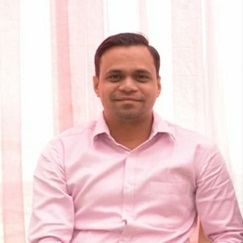

Our Expert's

Mr. Sandeep R. Desale
Senior Civil/Structural Engineer-
Key Qualifications : M.Tech in Civil-Structural Engineering (Mumbai University, 2012), B.E. in Civil Engineering (Shivaji University, 2009).
-
Experience : Over 12 years in bridge design, highway structures, and urban infrastructure.
-
Specializations : Analysis,design, and proof checking of bridges (PSC, steel composite, cable-stayed).
-
Software Proficiency : SAP2000, STAAD-Pro, ETABS, Midas Civil.
-
Notable Projects : Mumbai Coastal Road Project (L&T).
-
Mumbai Coastal Road Project (L&T).
-
DPR for Nagpur-Mumbai Expressway and flyovers in multiple Indian states.
Mr. Sujit G. Rathi
Senior Highway Design Engineer & Pavement Specialist-
Over 15 years of experience in highway and transportation design, road safety audits, and project management.
-
Proficient in Software : Skilled in Civil 3D, MX Road, and AutoCAD for geometric design, pavement design, and transportation planning.
-
Expert in Road Safety Audits & BIM : Expertise in road safety audits, BIM infrastructure modeling, and drainage design.
-
In-depth Knowledge of Standards : Familiar with international and local standards including AASHTO, IRC, and SATCC.
-
Project Experience : Involved in feasibility studies, DPR preparation, and BOQ calculations.
-
Additional Credentials : Certified in road safety and pavement design.
-
Delivered road safety audits for projects under NHDP and Hybrid Annuity Models.
-
Memberships: MCIHT and IRC.
Mr. Nirmit Chokshi
Health Monitoring Expert-
Experience : 8+ years in business development, project execution, and sales management in civil engineering consultancy.
-
Senior Manager at ESI Services India LLP : Led ATES and SMI projects, client relations, and team management, consistently achieving yearly targets and managing accounts for AFCONS, DMRC, and L&T.
-
Head of ATES & SMI Department at Aimil Ltd. : Successfully implemented dam and tunnel instrumentation, as well as utility surveys in Vadodara.
-
Major Project Experience : Instrumentation for metro and tunnel projects, including Ahmedabad Metro and Dilip Buildcon.
-
Health monitoring and NDT surveys for government and private sector projects.
-
Utility surveys and foundation health monitoring for wind turbine projects.
-
Additional Credentials : Delivered guest lectures on dam instrumentation, structural health assessment, and geophysical methods.
-
Certifications in Electrical Resistivity Imaging and Tomography.
-
Recognized with the "Star Performer of the Year" award (2015-16).

Mr. Nilesh Sutar
Chartered Structural Engineer-
Experience : Over 14 years of experience in structural engineering, specializing in the oil and gas industry and complex project management.
-
Educational Background : B.E. in Civil Engineering and M.Tech. in Structural Engineering.
-
Expertise in Structural Design : Proficient in designing residential and commercial complexes, high-rise buildings, and specialized structures for pharmaceutical plants and hydraulic systems, utilizing reinforced concrete, steel, and composite materials.
-
Advanced Design Software Proficiency : Skilled in using advanced design software to create efficient, safe, and sustainable structures that meet regulatory standards and client expectations.
-
Experience in Structural Audits & Rehabilitation : Extensive experience in structural audits, repair work, retrofitting, and rehabilitation of existing buildings, ensuring they meet modern safety standards.
-
Key Strength : Ability to assess structural integrity, diagnose issues, and implement effective repair strategies to prolong the lifespan of aging structures.

Ar. Shrimanth D. Belavi
Experienced Architect-
Experience : Over 8 years of experience specializing in the design of residential, commercial, and apartment complexes.
-
Expertise in Sustainable Architecture : Focused on creating environmentally sustainable and functional designs with an emphasis on innovative layout development.
-
Proficient in Advanced Design Software : Skilled in using advanced design tools to create efficient and aesthetically appealing structures.
-
Specialization in Structural & Utility Plans : Expertise in interpreting structural and utility plans to ensure seamless integration in design.
-
Commitment to Smart Technologies : Strong interest in exploring smart technologies and modern architectural trends to enhance design solutions.

Mr. Santosh Zunjar
Geotechnical Expert-
Experience : Over 19 years of professional experience in civil engineering, specializing in geotechnical investigation and quality testing.
-
Technical Manager at Geo Engineering Services : 10 years of experience managing geotechnical projects, including planning, development, and monitoring of foundation assessments and quality testing.
-
Expert in Technical Reports & Bid Document Analysis : Skilled in handling technical reports, bid document analysis, and conducting in-house feasibility studies to support the bidding process for various projects.
-
Experience in Integrated Testing & Analysis : Involved in preparation of both destructive and non-destructive testing and analysis for clients like NHI, AAI, IOCL, and the Irrigation Department.
-
Head of Civil Engineering at Deccan Hydrogeo Consultants : Led geotechnical investigation planning and relevant testing, contributing to the company's growth through strategic partnerships and MOU promotions.

Mr. Satish More
Geologist Expert-
Geologist & Hydrogeologist: M.Sc. in Geology (2014), currently pursuing a Ph.D. at Kavayitri Bahinabai Chaudhari North Maharashtra University.
-
Experience : Over 10 Years of Experience*: Specializing in geology, geophysics, hydrogeology, rainwater harvesting, GIS, and geotechnical investigations.
-
Consultant at Deccan Hydrogeo Consultants & Independent Consultants and Technocrats Pvt. Ltd.: Provides consultancy services in geological, geophysical, hydrological, and GIS projects across India.
-
Project Expertise : Involved in planning, development, and execution of projects for prominent clients like NTPC, GSDA GoI, ADANI, GETCO, GWSSB, AAI, NHI, MMRDA, and chemical industries, focusing on surveys, analyses, and designs.
-
Professional Memberships : Life member of GEOFORAM, participant in the Indian Society of Engineering Geology (ISEG), and Area Expert for Geology and Hydrogeology at NABET.
Mr. Prithunandan Ghose
Structure Expert-
Bachelor of Civil Engineering (Jadavpur University, 1989)
-
Experience : Over 30 years in civil engineering with expertise in structural design and project management.
-
Specializations : Design and detailing of steel and RCC structures for bridges, rail cum road projects, and large-scale infrastructure.
-
Countries Worked In : India, Maldives, UAE, Malaysia, UK, Germany, Netherlands.
-
Professional Memberships : Institute of Engineers (India), Indian Road Congress.
-
Notable Projects : Steel superstructures for railway and road bridges (e.g., Ganga Rail Bridge).
-
Complex bridge erection schemes.
-
Structural designs for power plants and industrial buildings.
Mr. Parthapratim Das
Senior Civil/Structural Engineer-
Bachelor of Civil Engineering (Jadavpur University, 1985).
-
Experience : Over 35 years in structural design and consultancy.
-
Specializations : Design of steel and RCC bridges, marine structures, ports, and viaducts.
-
Countries Worked In : India, Brunei, Malaysia, Sri Lanka, Bangladesh, Bhutan.
-
Professional Memberships : Institute of Engineers (India).
-
Notable Projects : Container Terminals at Mundra and Ennore Ports.
-
Major railway and road bridges in India (e.g., Hatania Doania, Barakar).
-
Infrastructure design for international projects in Malaysia and Brunei.